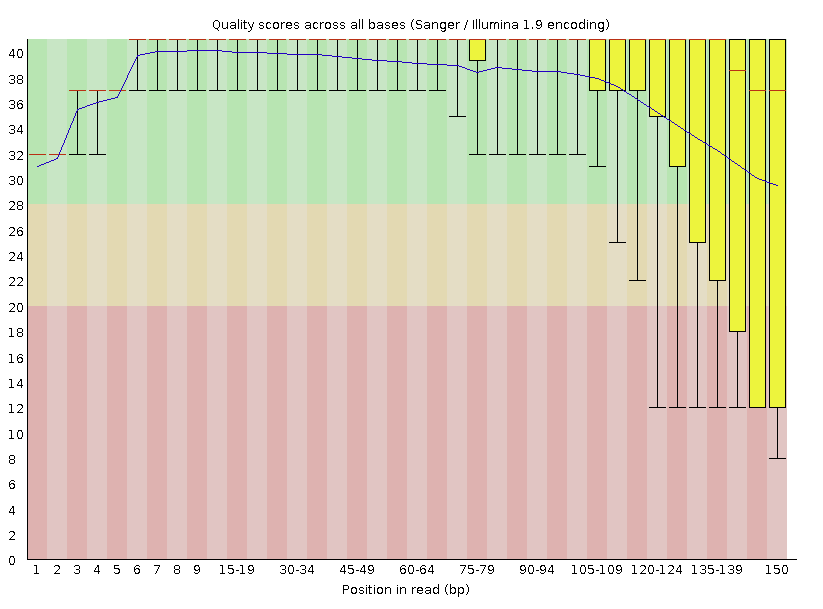
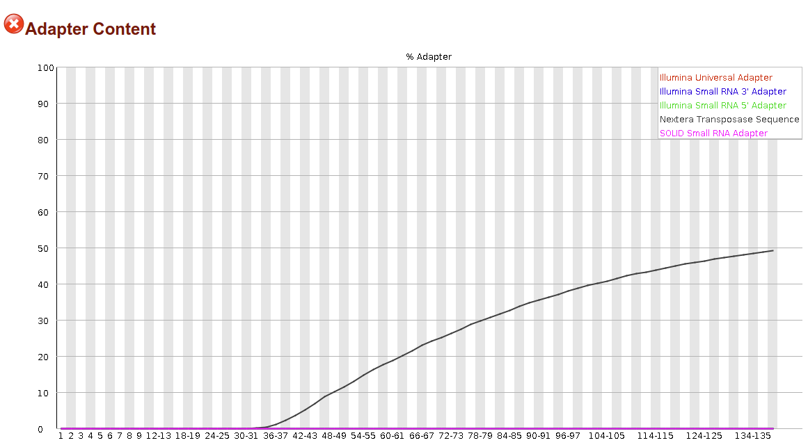
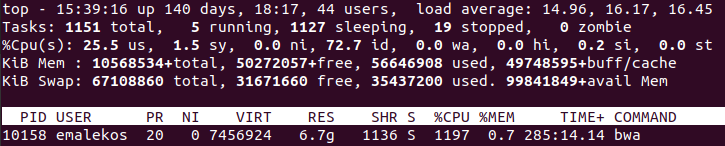
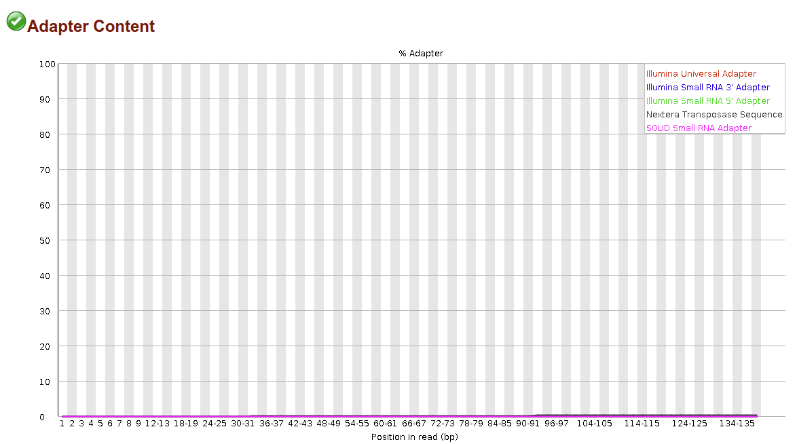

Created: 01-30-2021
Updated: 02-06-2021
hosted @ https://github.com/ericmalekos/RNASeq-walkthough # RNA Seq Walkthrough
Purpose: provide a step-by-step, end-to-end RNA Seq analysis walkthrough.
Environment: - All commands and scripts are made to run on the UCSC courtyard server, but should work in any bash environment.
| OS: | CentOS 7 |
| Python: | 3.6.8 |
| Samtools: | 1.9 |
If running on Windows try the Linux Subsystem for Windows or a Docker instance. Either of these can be used to create Linux environments on Windows (albeit with some drawbacks). I suspect any of the recent Ubuntu releases (16.04, 18.04, 20.04) should work.
If using courtyard (or any remote server) it’s highly recommended that you start commands in a screen environment. This is a very simple step and provides at least two substantial advantages:
ssh connection will not result in termination of whatever you’re running. (Execution can take many hours to days so this is a likely occurrence)In the examples below I will always be working in a screen window, however, I will only demonstrate how to start one in section 0.1. If your ssh connection is broken use the command screen -r to reconnect.
More on using screen.
The Data: I will be using paired-end 151 bp Illumina sequence data starting in fastq.gz format.
Note: fastq.gz files often appear as fq.gz. If this is the case for your data and you’re following this guide, you’ll have to change the scripts to fq.gz wherever fastq.gz appears.
In cases where it seems to make sense I will include the generic command followed by the command I am using for actual data as an example. Otherwise I will just show the command I am using. In the case of generic commands less-than, greater-than markers will be used EX: .
Connect to courtyard, start a screen and navigate to your directory
$ ssh <username>@courtyard.gi.ucsc.edu
$ ssh emalekos@courtyard.gi.ucsc.edu
# enter password at prompt
$ screen
$ cd <directory/to/transfer/data/to>
$ cd /public/groups/carpenterlab/people/emalekos/Connecting to data storage on remote server
$ sftp <username>@<hostname>
$ sftp emalekos@sftp.genewiz.com
# enter password at promptWe are now in an sftp environment ($ -> sftp>). We want to navigate to the data folder, use ls to list available directories
sftp> ls
30-422456969
# Now I enter the folder I found above
sftp> cd 30-422456969/
sftp> ls
00_fastq
# Found another folder, I'll enter that.
# This time I find the data files.
sftp> cd 00_fastq/
sftp> ls -lhIf you are in the data folder you should see something like:
-rwxr--r-- ? 0 0 2.8G Jan 6 14:04 1M-Ctl-AM_R1_001.fastq.gz
-rwxr--r-- ? 0 0 3.0G Jan 6 14:04 1M-Ctl-AM_R2_001.fastq.gz
-rwxr--r-- ? 0 0 3.0G Jan 6 14:04 1M-LPS-AM_R1_001.fastq.gz
-rwxr--r-- ? 0 0 3.1G Jan 6 14:04 1M-LPS-AM_R2_001.fastq.gz
-rwxr--r-- ? 0 0 3.0G Jan 6 14:04 1W-Ctl-AM_R1_001.fastq.gz
-rwxr--r-- ? 0 0 3.3G Jan 6 14:13 1W-Ctl-AM_R2_001.fastq.gz
-rwxr--r-- ? 0 0 3.0G Jan 6 14:13 1W-LPS-AM_R1_001.fastq.gz
-rwxr--r-- ? 0 0 3.2G Jan 6 14:13 1W-LPS-AM_R2_001.fastq.gz
-rwxr--r-- ? 0 0 2.1G Jan 6 14:14 2M-CSE-AM_R1_001.fastq.gz
-rwxr--r-- ? 0 0 2.3G Jan 6 14:14 2M-CSE-AM_R2_001.fastq.gzTo copy the files from this server to your workspace use the get command. Here I give some examples
# To copy a single file
sftp> get 1M-Ctl-AM_R1_001.fastq.gz
# To copy all files
sftp> get *
# To copy all files ending in 'fastq.gz'
sftp> get *fastq.gz
# To copy all files with 'LPS' somewhere in the middle
sftp> get *LPS*
# To copy all files starting with 'LPS' and with '_R1' somewhere before the end
sftp> get LPS*_R1*NOTE: ’*’ performs wildcard expansion - it can fill in for any characters and is useful for pattern matching. When you use it it’s good to check which patterns it’s actually matching by double tapping the Tab key. This will list everything that matches. If you see the files you want press Enter to execute.
You can use this method to transfer data files from your Google Drive account to courtyard. It works but is somewhat clunky, and there may be a better way. For instance this method transfers one file at a time, if all relevant files could be zipped together only one command would be required.
We will use the python package gdown. The first time you use this you will have to install it
pip3 install gdown --user/d/ and /view/1gc0Nfl693O49BECq34g6zno-ThJdBqw_Now you can start a python3 session and copy the files over
$ python3
# Now in python shell
>>> import gdown
>>> url="https://drive.google.com/uc?id=1gc0Nfl693O49BECq34g6zno-ThJdBqw_"
>>> output="desired_filename.fastq.gz"
>>> gdown.download(url, output, quiet=False)Alternatively you can open a text editor and write a script like this one (or copy the script from the gihub page).
import gdown
url_prefix = "https://drive.google.com/uc?id="
suffix = ".fastq.gz"
filedict = {"file_1_1" : "1gc0Nfl693O49BECq34g6zno-ThJdBqw_",
"file_1_2" : "<file 1_2 share link>",
"file_2_1" : "<file 2_1 share link>",
"file_2_2" : "<file 2_2 share link>"}
for key, value in filedict.items():
gdown.download(url_prefix + value, key + suffix, quiet=False)After changing the entries in filedict to your desired filenames and corresponding links, run with:
python3 get_Gdrive.pyYou may want to practice running through the pipeline with a reduced dataset. This would allow you to troubleshoot much more quickly than if you tried processing all of your data at once. We can make some reduced, but still functional fastq.gz files with the following command
zcat <file.in> | head -n <# of lines> | gzip > <file.out>
zcat full_file.fastq.gz | head -n 10000000 | gzip > reduced_file.gzThis example takes the first 10000000 lines of the input file (or the first 2500000 fastq entries). The resulting gzipped file is ~200 MB. Adjust <# of lines> as you see fit, but make it divisible by 4 to avoid cutting off fastq entries.
Before going any further I’m going to organize my workspace.
# move reads to a new directory
$ mkdir raw_reads
$ mv *.gz raw_readsFastQC seems to be the standard read quality checking tool. For each read file it generates an HTML file containing its findings. More on FastQC.
# Download and unpack FastQC
$ wget https://www.bioinformatics.babraham.ac.uk/projects/fastqc/fastqc_v0.11.9.zip
$ unzip fastqc_v0.11.9.zip
$ chmod +x FastQC/*
$ rm fastqc_v0.11.9.zip
# Make an output directory and run FastQC on all fastq.gz files
$ mkdir quality_raw_reads
$ for i in raw_reads/*fastq.gz; do FastQC/fastqc $i -o quality_raw_reads/ ; doneNow we want to view the HTML pages in a web browser. I don’t know of an easy way to do this with the files on the server. One option is to use sftp get as described above to move the files to your computer.
Here’s an alternative that does not require downloading the files, but instead temporarily mounts the quality_raw_reads to your computer using sshfs. These commands are all run on your local computer, not courtyard
# Install sshfs on *your* computer if you don't have it
$ sudo apt install sshfs
# enter password
# make local mount directory and mount files to it
$ mkdir mount
$ sshfs <username>@courtyard.gi.ucsc.edu:<path/to/files> </mount/to>
$ sshfs emalekos@courtyard.gi.ucsc.edu:/public/groups/shariatilab/emalekos/quality_raw_reads/ ./mount
# open a mounted file in your browser
<browser> <mount/file.html>
$ google-chrome mount/A01_1_fastqc.htmlHere are my reads’ quality scores for the first fastq.gz file.

And here is the adapter content

After viewing, unmount the files:
$ fusermount -u <mounted_dir>
$ fusermount -u mountTrimming low quality bases in Illumina reads is a common step in sequence alignment pipelines. However, modern aligners including STAR, BWA-MEM and HISAT2 (which we will use in the next section) perform “soft clipping” which eliminates the need for additional trimming. Using trimming tools in a way that is insensitive will likely reduce the mapping rate and can distort results.
What about adapter removal? The author of STAR suggests it could be useful when aligning short reads and the author of BWA suggests it should be done
Good tools for adapter trimming are Trimmomatic, Cutadapt and NGmerge. Here I use NGmerge which determines the adapter sequences without user input which is nice. However, unlike the other two, it only works for paired-end reads.
# get NGmerge
$ git clone https://github.com/jsh58/NGmerge
$ cd NGmerge
$ make
$ cd ..
# make new directory for reads with adapters removed
$ mkdir adapter_trimmed_readsTo run NGmerge on all of the fastq.gz files in raw_reads/ you can copy this script.
# Make file in nano text editor
$ nano ngmerge_adapters.sh
# Copy what's below with Ctrl+c and paste into nano file with Ctrl+Shift+v
#!/usr/bin/env bash
readDir=raw_reads/
minRead=31
threads=8
maxQ=41
outDir=adapter_trimmed_reads/
outName=trim
for i in ${readDir}*_1.fastq.gz
do
prefix=$(basename $i _1.fastq.gz)
echo $prefix
./NGmerge/NGmerge \
-a \
-z \
-v \
-e $minRead \
-u $maxQ \
-n $threads \
-1 ${readDir}${prefix}_1.fq.gz \
-2 ${readDir}${prefix}_2.fq.gz \
-o ${outDir}${prefix}_${outName}
doneRegarding the variables above the for statement
- If you have different directory names for reads and output you will need to change them.
- minRead is based on the FastQC adapter output which shows the adapters ending around base 31. Update this based on your FastQC results.
- maxQ is set to 41 because in Illumina >=1.8 the top quality score is 41 rather than 40.
- threads should be chosen with regard to the other jobs running on the server. See below for neighborly thread # setting
Once you’ve adjusted the variables, run the script:
# Ctrl+o then Enter to save
# Ctrl+x to exit nano
# make script executable
$ chmod +x ngmerge_adapters.sh
# run script
$ ./ngmerge_adapters.shThis took a few hours when I ran it with the above settings on 10 sets of paired-end reads.
In the previous step, and going forward, we are going to be making use of a threads option in pretty much every tool we run. threads is short for “threads of execution” which, in this context, refers to a program performing some sort of data processing. In general a program uses a single thread of execution, but most bioinformatics tools allow the user to specify the number of threads, which is useful because the larger the number of threads, the more data can be processed in parallel, and the faster the operation can complete. However every computer has only a finite number of threads, probably between 4 and 16 on your personal computer, and 64 on courtyard. The 64 threads are shared among all courtyard users so the number available to you will certainly be less than that. To check the current availability use:
$ top
# use Ctrl + c exit topYou’ll see something like:

I’ve cropped the image so that it only shows one running process - my BWA run - but you’ll see all of the current processes. The most important thing to note for the thread discussion is the %Cpu(s) number. Here it’s at 25.5% which means ~ 64 * 0.25 = 16 threads are in use, and 48 are available (also, under my BWA instance the %CPU is 1197%, where 100% is equivalent to a single thread, so I must have run this with 12 threads). The main thing is to be considerate when choosing threads and NOT contribute to a situation where %Cpu(s) becomes >= 100%. This would add significant overhead as the server switches among processes and slow everyone’s computation down.
Here we repeat Parts 1.1 & 1.2, updating the path to point to the new QC files.
mkdir quality_trimmed
for i in adapter_trimmed_reads/*fastq.gz; do FastQC/fastqc $i -o quality_trimmed/ ; done
$ sshfs emalekos@courtyard.gi.ucsc.edu:/public/groups/shariatilab/emalekos/quality_raw_reads/ ./mount
$ google-chrome mount/A01_trim_1_fastqc.html
$ fusermount -u mount